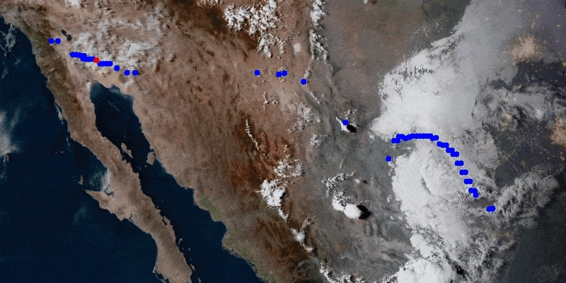
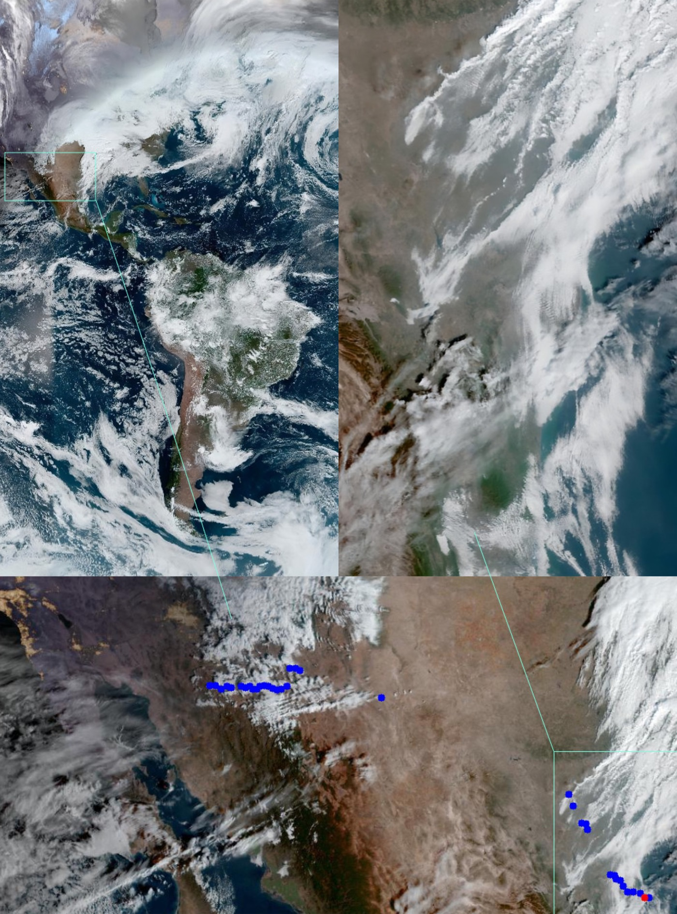
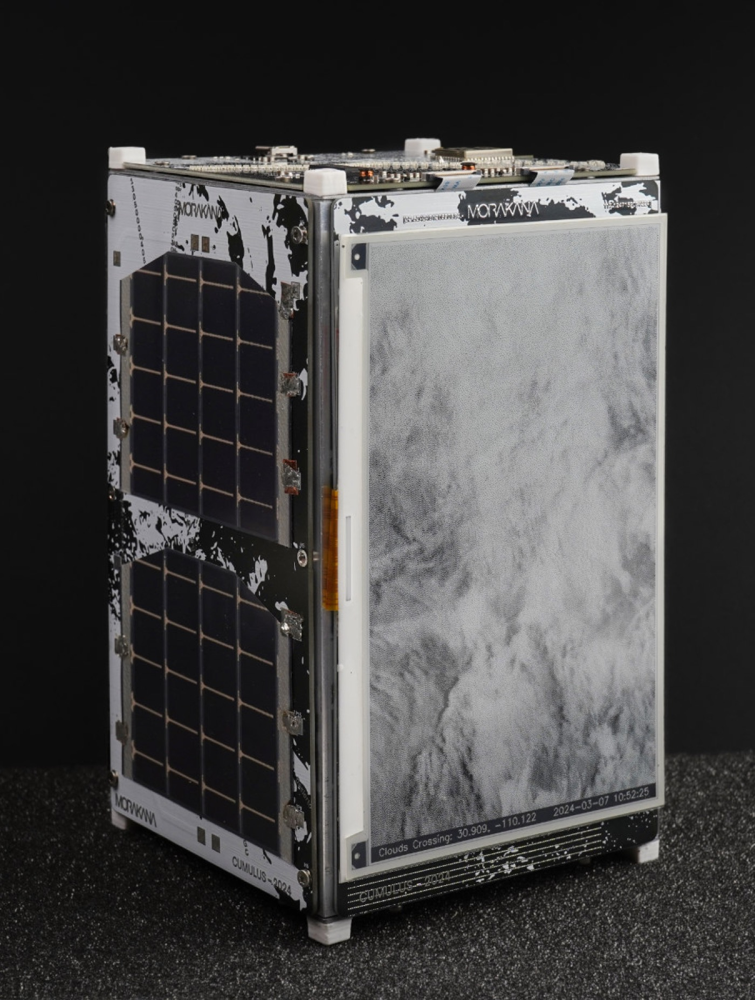
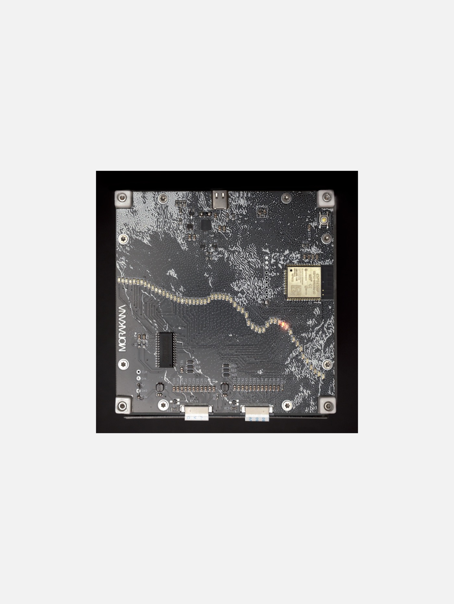
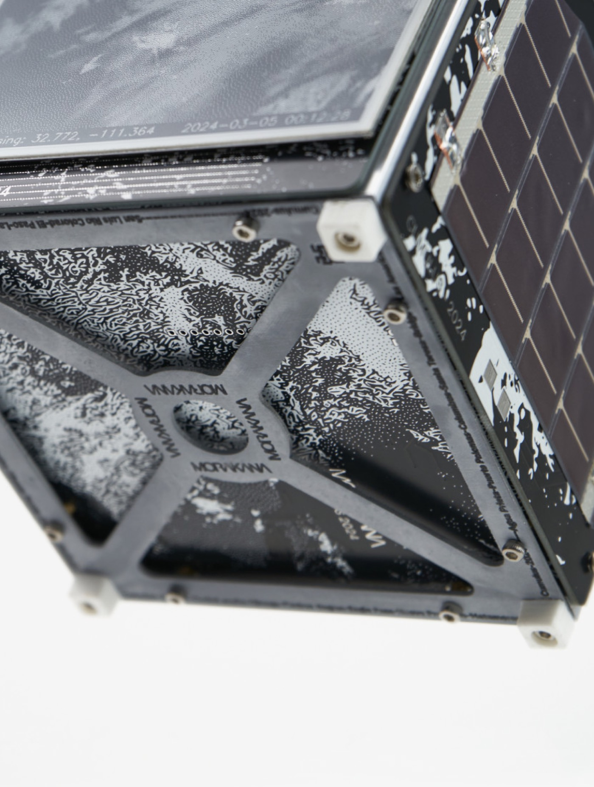

Cumulus is a CubeSat-like device by MORAKANA that watches clouds cross the Mexico–United States border.[1] It is part of the second section of Yunso's Triangle, along with Latent Chair and AI Nüshu.
Cumulus, by MORAKANA, is a CubeSat-like device that watches clouds cross the Mexico–United States border.[1] It is part of the second section of Yunso's Triangle, along with Latent Chair and AI Nüshu.
Concept
The device looks at the border for clouds, not for people. Near-real-time satellite images give a view without political lines. The artists tie that view to the overview effect, the shift in awareness reported by astronauts who see Earth from orbit. Unlike a CubeSat, Cumulus stays on the ground, so that perspective is offered from Earth.
It looks for clouds, not people. Satellite images show the border without political lines, tied to the overview effect reported by astronauts in orbit. Cumulus stays on the ground.
-

Clouds -

Satellite
The device
Two electronic paper displays update every 11 minutes from images taken by NOAA satellites. One shows the American continent. The other follows a cloud as it crosses the river, the desert, the walls, or the coastline.
A computer-vision program searches the Mexico–US border, which the artists describe as a line of more than 3,000 km and the most crossed in the world. LEDs stand in for that line, and a red LED marks the place where a cloud is crossing. The housing uses the materials, scale, and power of a small satellite.
Two electronic paper displays update every 11 minutes from NOAA satellites: the American continent, and a cloud crossing the border. Computer vision searches that line; LEDs stand in for it, and a red LED marks the crossing. The housing follows a small satellite.
-

Display -

LEDs -

Housing
References
- MORAKANA. Cumulus. morakana.com. ↑